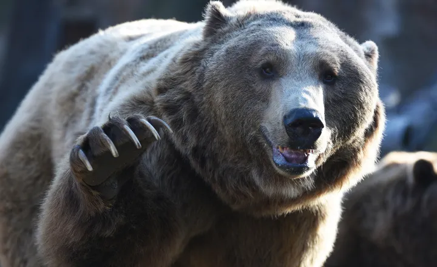

O Urso pardo (Ursus arctos) é altamente variável em tamanho, com diferenças significativas entre as subespécies e ao longo das estações do ano. Seu peso e tamanho podem variar sazonalmente devido à entrada e saída da hibernação, quando estão mais magros na primavera após a letargia e mais pesados no outono antes da próxima hibernação. Em média, um urso pardo adulto tem um comprimento total de 1,4 a 2,8 metros e uma altura no ombro de 70 cm a 1,53 metros, com uma cauda curta variando de 6 a 22 cm de comprimento. O peso médio de machos adultos de várias subespécies e populações em todo o mundo foi de 217 kg, enquanto o peso médio das fêmeas adultas foi de 152 kg, com base em estudos de diferentes populações.
O Urso pardo habita em partes da Rússia, Ásia central, China, Canadá, Estados Unidos (principalmente o Alasca), Escandinávia e região dos Cárpatos (especialmente a Romênia), Anatólia e Cáucaso. O urso pardo é reconhecido como o animal nacional e estadual de vários países europeus.
O Urso-pardo é um animal solitário, sabe conviver pacificamente quando existe abundância de alimento. Durante o inverno, ele busca covas e cavernas para entrar em estado de letargia, que pode durar até sete meses. Durante esse período, sua temperatura corpórea cai levemente (32 °C a 35 °C), e sua respiração e batimentos cardíacos diminuem drasticamente de ritmo. Também não come, não urina e não defeca neste período de hibernação utilizando energia apenas de sua gordura acumulada. O urso-pardo vive de 25 a 30 anos (máximo conhecido em estado selvagem é de 34 anos e em cativeiro é de 47 anos). Medem de 1,70 m a 2,50 metros de altura, e cerca de 3 metros em pé.

Ordem: Carnivora
Família: Ursidae
Gênero: Ursus
Espécie: Ursus arctos